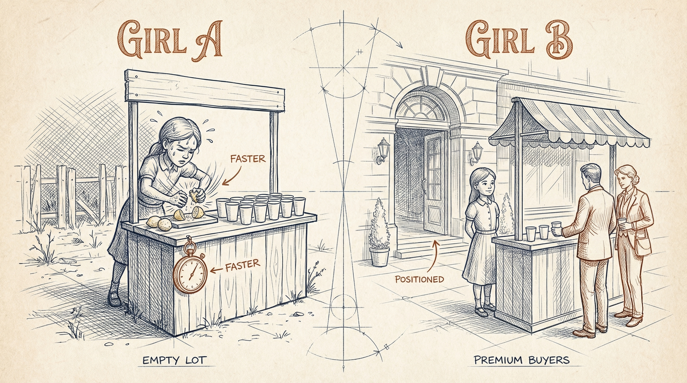
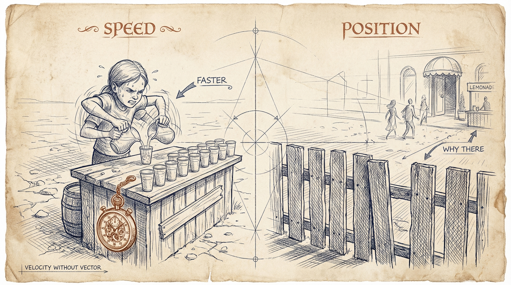
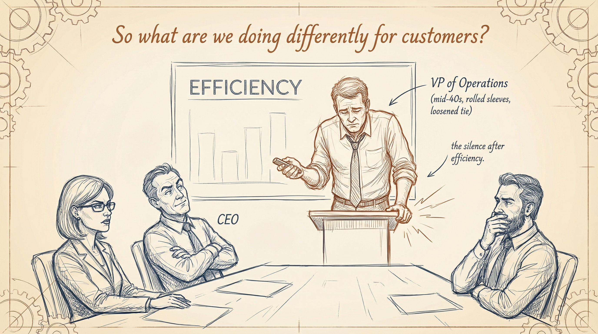

The Efficiency Paradox
Companies obsessed with AI cost savings get less of them.
That is not an opinion. BCG studied 1,800 companies and found that organizations focused on innovation achieve 40% more cost savings than organizations focused only on cutting costs.
Read that again. The companies chasing efficiency harder are losing the efficiency race.
Everyone says "start with cost savings." That is exactly why 56% of CEOs report zero financial impact from AI — despite spending millions on it.
This is for leaders building an AI strategy who measure success by what they cut — costs, headcount, hours. Leaders who have delivered efficiency wins in a QBR room and still heard the question they could not answer. Leaders who sense the treadmill but cannot name it yet.
If you have struggled with:
- Getting headcount denied and being told to "do more with less" — then using AI to do exactly that, and nothing changing
- Celebrating efficiency wins in a QBR that had zero impact on revenue, margin, or competitive position
- A board asking about AI ROI and having no answer beyond "we saved time"
You are in the right place.
Because what if you could:
- Treat every efficiency win as startup capital for your next competitive advantage
- Deploy the Capacity Dividend — the invisible asset AI creates that 83% of companies squander
- Measure what actually matters: not Input reduced, but Output Value created
- Build the AI strategy that wins on cost AND revenue — instead of losing on both
Here is how.
How the Capacity Dividend Walks Out the Door
One pattern surfaces consistently across mid-market AI engagements.
A distribution company — the kind running on tight margins and high volume — deployed AI across their order processing workflow. The results were real. Processing time dropped by 40%. What used to take the operations team all day now finished by lunch.
The VP of Operations presented the win at the next quarterly review. Slides showed hours saved. Cost per order down. Throughput up. The room clapped.
Then the CEO asked a question no one had prepared for.
"So what are we doing differently for customers?"
Silence.
No one had answered that question because no one had asked it. The entire AI initiative was framed around the denominator — reduce input, lower cost, save time. The freed capacity — hundreds of hours per month of human attention now available — had no destination. No investment thesis. No plan.
Within six months, the freed time had been absorbed. Team members filled it with more of the same work. More reports. More meetings. More email. The operations team was not busier with higher-value work. They were busier with more volume of the same low-value work.
Meanwhile, a competitor in the same space ran the same efficiency play. Same tools. Similar savings. But they asked the second question before they deployed the first automation.
"When we free up 200 hours a month of human attention, what will we build with it?"
Their answer: a customer-facing logistics dashboard that gave clients real-time visibility into their shipments. Not a cost play. A value play. Within twelve months, that competitor was winning accounts on service differentiation — not on price. They had moved from Girl A to Girl B.
The first company had a Capacity Dividend — and consumed it. The second company had a Capacity Dividend — and invested it.
This pattern is not rare. It is the default. The Capacity Dividend Framework exists precisely because companies need a structure for the question that comes after the efficiency win.
The Capacity Dividend Framework
Here is the truth: efficiency is not the destination. It is the on-ramp.
Management consultants are taught a strict equation early in their training:
Productivity = Output Value / Input
Most companies optimize Input — the denominator. Faster processes. Lower costs. Fewer people. This is the Girl A strategy. She makes lemonade faster.
Elite operators optimize Output Value — the numerator. Better positioning. Higher-value offerings. Customers willing to pay a premium. This is the Girl B strategy. She finds where thirsty people pay more.
Both girls work hard. Only one builds a business.
The same equation governs your AI strategy. Every efficiency win reduces the denominator. But if the numerator stays flat, productivity barely moves. Your competitor — the one raising the numerator while you shrink the denominator — is building a gap that widens every quarter.
The Capacity Dividend Framework turns this equation from theory into action. It works in four steps.
Step 1: The Audit — Know What You Have Before You Spend It
Before your next efficiency win lands, quantify the dividend it will create. How many hours per week will AI free across your team? What is the dollar value of that freed capacity?
McKinsey research found AI frees an average of 5.7 hours per employee per week. In a 50-person team, that is 285 hours per week. Over a year: 14,820 hours of human attention.
That is not a cost savings line item. That is a capital asset. And right now, 83% of companies are letting it evaporate.
Skip this step and you will not even notice when the dividend disappears. You will celebrate the efficiency win and never realize the real asset walked out the door.
Example: A mid-market services firm deployed AI document processing and saved their team 6 hours per week per person. They quantified it: 12 team members, 6 hours each, 52 weeks. That is 3,744 hours per year of freed human capacity. At their fully loaded labor cost, the dividend was worth $280,000 — not in savings, but in available investment capital for innovation.
Step 2: The Decision — Treat Freed Capacity as Venture Capital
Before the efficiency arrives, decide what you will build with it. Not after. Before.
This is the step nearly every company skips. They celebrate the time saved, then let the organization absorb it unconsciously. The time fills with meetings. With more reports. With faster versions of the same low-value work.
Booking Holdings did not skip this step. Their CFO modeled $150M in AI efficiency savings — and simultaneously modeled $170M in reinvestment into AI capabilities, their connected trip platform, and fintech offerings. The reinvestment plan existed before the savings arrived.
The decision is not "should we innovate?" It is "what will this specific capacity dividend fund?" Make it concrete. Make it specific. Make it before you deploy.
Example: The VP of Operations who runs the Capacity Dividend Audit and finds 3,744 freed hours does not announce "we saved time." She presents a reinvestment thesis: "We will redirect 2,000 of those hours toward building a customer self-service portal that eliminates 60% of inbound service calls. Here is the projected revenue impact."
Step 3: The Reinvestment — Direct Freed Capacity to Output Value
Redirect freed human capacity toward the numerator of the productivity equation. Not cost savings. Value creation. Customer innovation. New offerings. Competitive differentiation.
This is where Girl B lives. She is not making lemonade faster. She is finding where thirsty people pay a premium.
Concrete reinvestment targets include:
- Customer-facing innovation: New products, services, or experiences enabled by freed capacity
- Market expansion: Entering adjacent segments with human attention now available for research and relationship-building
- Process redesign: Not optimizing existing workflows, but fundamentally rethinking them
- Capability building: Training teams in higher-value skills now that AI handles the routine
JPMorgan Chase saved 360,000 work hours annually with their COiN platform. They did not cut 180 positions. They redirected that human capacity toward developing IndexGPT — an entirely new AI-driven investment product. The efficiency funded the innovation. The innovation created the competitive moat.
Example: A logistics company frees 200 hours per month from AI-automated dispatch. Instead of processing more shipments (denominator play), they assign that capacity to building predictive delivery windows and proactive customer communication. Their NPS scores jump. Retention improves. Competitors are still optimizing dispatch speed.
Step 4: The Measure — Stop Counting What You Saved. Start Counting What You Built.
The final step breaks the treadmill for good. Change what you measure.
Stop measuring AI success by denominator reduction alone: hours saved, costs cut, headcount avoided.
Start measuring AI success by numerator growth: revenue from new offerings, customer retention improvement, market share in new segments, value of innovations launched with freed capacity.
McKinsey found that high performers are 3x more likely to have fundamentally redesigned individual workflows. They do not report "we saved 10,000 hours." They report "we launched three new service lines using capacity freed by AI."
Example: The QBR slide deck changes. Instead of "AI saved us $400K in processing costs," the lead slide reads: "AI-freed capacity funded our customer intelligence platform, which generated $1.2M in new revenue this quarter." That is the conversation that changes everything.

The Research Backs This Up
Study 1: BCG — "Capturing the Full Value of Generative AI" (2025)
BCG studied 1,800 companies across industries and found a widening AI value gap. Companies they classify as "future-built" — those pursuing innovation-core transformation — achieve 1.7x more revenue growth, 3.6x greater three-year total shareholder return, and 40% more cost savings than laggards focused on efficiency alone.
The finding that matters most: innovation-focused companies achieve more cost savings than cost-focused companies. The efficiency-only play loses on its own terms. The companies that treated efficiency as the on-ramp — not the destination — won on every metric, including the one the laggards optimized for.
Study 2: McKinsey — State of AI (2025-2026)
McKinsey surveyed CEOs and senior executives and found AI saves an average of 5.7 hours per employee per week. Promising. But only 1.7 of those hours were redirected to work that actually improved business outcomes. The other 4 hours evaporated — absorbed by more meetings, more email, more volume of existing low-value tasks.
Separate HBR research confirmed the pattern: 83% of AI users who saved time wasted at least a quarter of it. Among managers, 36% wasted more than half.
The implication is stark. In a 100-person company, AI frees roughly 30,000 hours per year. At the current reinvestment rate, 21,000 of those hours improve nothing. That is not a technology failure. It is a leadership failure. The Capacity Dividend exists. The investment thesis does not.
Real-World Applications
Booking Holdings: The Springboard in Action
Situation: The travel giant ran a multi-year AI transformation and achieved $150M in cost savings through workforce optimization and technology consolidation in 2025.
Action: Rather than reporting $150M in margin improvement, their CFO explicitly modeled reinvestment. They redirected $170M — more than the savings — into AI capabilities, their connected trip platform, and expanded fintech offerings.
Result: Gross bookings of $166B (up 10% year-over-year). Revenue of $24B (up 11%). Adjusted EBITDA of $8B+ (up 17%). Revenue grew faster than costs.
Lesson: They did not treat efficiency savings as profit. They treated them as innovation capital. The efficiency was the on-ramp. The connected trip platform was the destination.
The Distribution Company: The 40% Win That Went Nowhere
Situation: A mid-market distribution company cut order processing time by 40% using AI — a significant efficiency win by any measure.
What happened: The team celebrated. The board was briefed. The costs came down. But no one planned for the freed capacity. Within months, the same team was doing the same work at higher volume. No new capabilities. No customer innovation. No competitive differentiation.
Key insight: They answered "Did we save time?" with a resounding yes. They never asked "What did we build with it?" The Capacity Dividend was declared and immediately consumed.
The Consulting Pattern: Efficiency Wins That Compound
Situation: Across mid-market AI engagements, a consistent pattern emerges. Companies that plan their reinvestment before deploying efficiency AI compound their returns. Companies that deploy first and plan later never make the transition.
What the pattern shows: The companies that succeed do one thing differently at the start. They write the reinvestment thesis alongside the efficiency business case. "We will save X hours. We will invest Y of those hours into Z capability." The companies that skip this step consistently end up running the treadmill.
Key insight: The decision to reinvest is not a second step. It is part of the first step. The companies that separate "efficiency" from "what we do with it" never reconnect them.
The QBR Silence: A Relatable Everyday Scenario
Common situation: A VP of Operations runs the AI efficiency project for six months. The quarterly business review arrives. The slides are strong: processing costs down 30%, throughput up, error rates halved. The room nods.
The moment: The CEO leans forward. "Great. So what are we doing differently for customers?" The VP opens their mouth. Nothing comes out. Because nothing has changed for customers. The efficiency win was real. The customer value is identical. The competitive position is unchanged.
Why it works: The VP measured what was easy to measure — denominator reduction. Nobody measured the numerator. Nobody asked what the freed capacity built. The silence in that room is the sound of a Capacity Dividend being wasted.
The Automation Treadmill: A Cautionary Tale
The mistake: A regional services company went all-in on automation. Every process that could be automated was automated. Headcount dropped. Costs fell. The efficiency metrics were spectacular.
Why it failed: Their competitor used the same automation tools — and achieved similar cost savings. But the competitor invested their freed capacity into a new service line that the first company could not match. The automation-first company had optimized everything and innovated nothing. When the competitor's new service line started pulling customers, the first company had no answer. They could not out-automate their way to differentiation.
Better alternative: Automate ruthlessly — and reinvest the dividend into something your competitor cannot replicate by running the same playbook. Efficiency is a commodity. What you build with the freed capacity is the moat.
What Most People Get Wrong

The Myth: AI is about cutting costs.
Why They Believe It: Every AI vendor leads with cost savings. Every ROI calculator measures hours saved. Every board presentation asks about efficiency gains. The frame was set by the people selling the tools.
The Hidden Cost:
- You optimize your way into parity — competitors using the same tools reach the same cost structure
- Freed capacity evaporates into higher volume of the same low-value work
- The human capabilities needed for innovation atrophy from disuse
- Your board thinks AI "worked" because costs went down, while your competitive position is unchanged
The Truth: Cost reduction is the gateway, not the destination. Efficiency-only AI is a treadmill. The best ROI on AI is not the hours saved — it is what you build with those hours.
BCG found that innovation-focused companies achieve 40% more cost savings than cost-focused companies. The efficiency-only play does not even win the efficiency game.
The Real Problem: Most organizations measure what is easy — time saved, cost reduced, headcount avoided — and ignore what is hard: value created. They have optimized the denominator and never touched the numerator.
It is not a technology problem. It is a measurement problem. And measurement problems are leadership problems.
What Becomes Possible: When you treat the Capacity Dividend as startup capital — reinvesting freed time into Output Value creation — you stop running in place and start compounding. The treadmill becomes a springboard. And the gap between you and your efficiency-only competitors widens every quarter.
How to Implement This (Starting Today)
Your 4-Week Implementation Plan
Week 1: Run the Capacity Dividend Audit
Action: Calculate how many hours AI is freeing per week across your team. Include every AI tool, every automated workflow, every process that runs faster. Quantify the total freed hours and the fully loaded dollar value.
Goal: A single number — your weekly Capacity Dividend — that everyone on the leadership team can see. This is not a cost savings number. It is an available investment number.
Week 2: The Reinvestment Decision
Action: Before your next efficiency win lands, decide what you will build with the freed capacity. Write a one-page reinvestment thesis: "We will redirect X hours toward Y initiative, which will create Z value for customers." Get leadership sign-off on the thesis, not just the efficiency project.
Goal: A documented reinvestment destination that exists before the capacity arrives. The decision is made. The treadmill is off.
Week 3: Pilot the Numerator Play
Action: Direct one team's freed capacity toward one Output Value creation project. Choose something customer-facing. Something that would not have been possible without the freed hours. Keep the scope tight. One team, one project, four weeks.
Goal: A live experiment that proves your organization can redirect efficiency gains toward value creation — not just consume them.
Week 4: Build the New Dashboard
Action: Add numerator metrics to your AI reporting. Alongside "hours saved" and "costs reduced," track: revenue from initiatives funded by freed capacity, customer satisfaction improvements from new capabilities, new offerings launched using reinvested time.
Goal: A measurement system that tracks what you built — not just what you saved. This is the dashboard that ends the treadmill permanently.
Quick-Start Checklist
Before you begin:
- Identify every AI tool and automation currently deployed across your organization
- Confirm you have access to time-tracking or capacity data for affected teams
- Schedule a leadership alignment meeting to present the Capacity Dividend concept
Your first 24 hours:
- Ask one question in your next meeting: "What are we doing with the time AI freed up?" — and document the answer
- Pull the data on one process where AI has already saved time. Quantify the freed hours per week.
- Write the first draft of your reinvestment thesis — even if it is rough. The act of writing it changes how you think about efficiency wins.
Common Obstacles (And Solutions)
Obstacle 1: "We don't have bandwidth to innovate — we're barely keeping up."
Solution: That is the treadmill talking. You already have freed capacity from AI. The Audit will show you exactly how much. The problem is not bandwidth. The problem is that freed bandwidth is flowing back into volume work by default. Redirect even 20% of it — and protect that time — and the innovation pipeline starts.
Obstacle 2: "Leadership only measures cost savings."
Solution: Show them the BCG data. Innovation-focused companies achieve 40% more cost savings than efficiency-focused companies. Cost savings are not threatened by this approach — they are amplified. Frame the Capacity Dividend as a way to get more cost savings, not fewer. Then add the numerator metrics alongside the denominator ones.
Obstacle 3: "We don't know what to build with the freed capacity."
Solution: Start with the customer. Ask: "If our team had 200 extra hours per month, what could we build that our customers would pay a premium for?" The answer is your reinvestment thesis. If your team cannot answer that question, the problem is not AI strategy. It is customer proximity. Fix that first.
Set Realistic Expectations
Do not expect overnight revenue lift from reinvesting freed capacity. Innovation compounds. It does not spike.
Do expect a shift in how your team talks about AI within 30 days. The conversation moves from "how much did we save?" to "what did we build?" That shift is the leading indicator that everything else is about to change.
Do not expect every reinvestment to succeed. You are deploying freed capacity like venture capital. Some bets will miss.
Do expect the organizations that make this shift to outperform the ones that do not — and for the gap to widen over time. BCG's data shows 3.6x shareholder return differential between leaders and laggards. That gap is not closing. It is accelerating.
The people who succeed with this are not the ones with the biggest budgets or the most advanced AI tools. They are the ones who asked a different question. Not "did we save time?" but "what did we build with it?"
The Bottom Line
The Capacity Dividend Framework comes down to this:
Every AI efficiency win creates an invisible asset — freed human capacity. The companies that invest it build compounding advantages. The companies that consume it run the treadmill.
The leaders winning with AI are not the most aggressive cost-cutters. They are the most intentional reinvestors.
If you do nothing else, start here: Run the Capacity Dividend Audit this week. Count the freed hours. Put a dollar value on them. Then ask your leadership team: "What are we building with this?"
Your next step: If you want to think through your specific reinvestment strategy — how to move from efficiency gains to competitive advantage in your industry — [that conversation starts here].